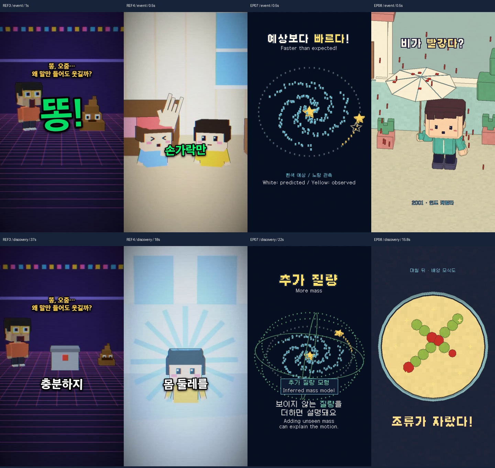
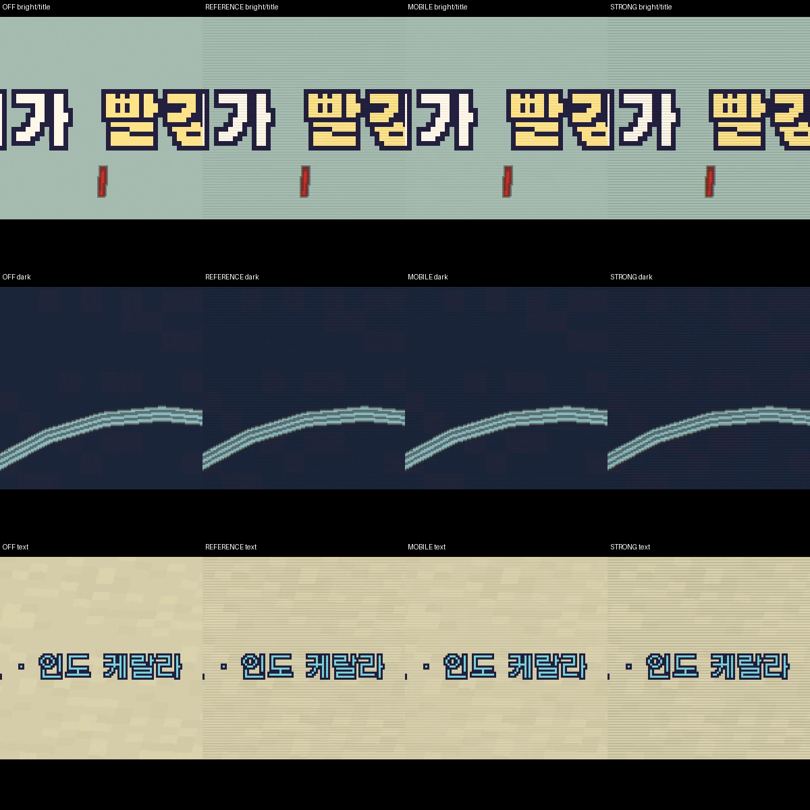
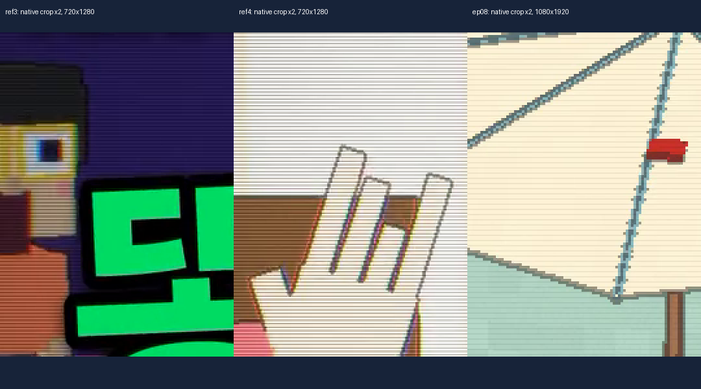
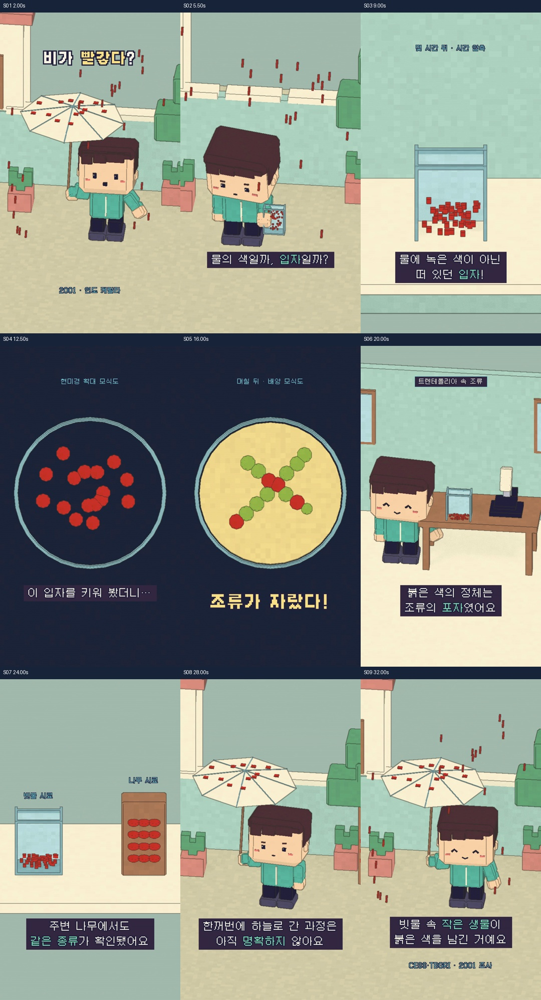
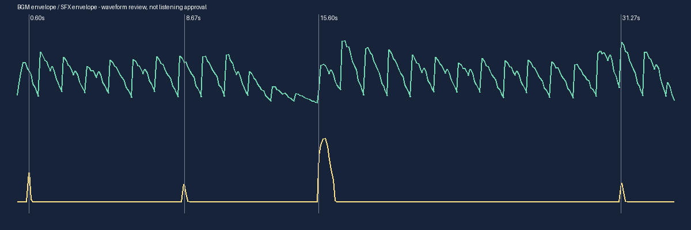

34초 · 1080×1920 · 30fps · 한국어 기본 / 영어 별도 · BGM + SFX · TTS 없음
한국어 최종 MP4 · 영어 최종 MP4 · 한국어 SRT · English SRT
기술 QA와 편집 검수를 분리했습니다. 실제 MP4에서 뽑은 전체 구간 시퀀스와 핵심 동작을 검수했지만, 사람의 연속 재생 감상·청취·관객 완주율 시험은 완료로 표시하지 않습니다.
기존 나무위키 캐시 후보 40개 → 규칙 필터 → 상세 검토 10개 → 시각적 후킹 5개 → 케랄라 붉은 비. 편집 평가 93/100이며 실측 흥미 점수가 아닙니다. 판정은 2001년 조사된 시료의 색 원인에 한정합니다.
CESS·TBGRI 2001 보고서 공개 보관본: 입자의 침강, 배양된 조류와 주변 시료를 근거로 색 원인을 설명합니다. 많은 포자가 동시에 공중에 들어간 정확한 과정은 미확인으로 남깁니다. 2013년 독립 DNA 검출 연구도 검토했으나 2001 배양 전체를 독립 재현한 자료로 취급하지 않았습니다.
| 단계 | 관객이 얻는 정보 |
|---|---|
| 기 | 흰 우산에 붉은 비가 튄다. 민수가 빗물을 모은다. |
| 승 | 가라앉는 입자와 현미경의 작은 점에서 단서를 얻는다. |
| 전 | 배양에서 조류가 자라며 조사팀의 포자 판정과 연결된다. |
| 결 | 주변 나무에도 같은 종류. 대량 공중 유입은 미확인이나 이 시료의 색은 생물 입자로 설명된다. |
후킹: 첫 프레임부터 흰 우산에 붉은 빗방울이 떨어집니다. 배양에서 자라는 조류가 발견의 보상이며, 끝에서 처음 비의 색을 다시 이해합니다.
EP07의 추상 도식 24/35초, 낮은 캐릭터 참여, 차가운 단일 공간, 동시 이중 언어를 개선했습니다. EP08은 야외·채집·침강·현미경·배양·실험실·시료 비교로 이어지며 추상 확대는 7/34초입니다. 우산 잘림과 머리카락 모서리 결함을 실제 프레임 확인 후 수정했고, 행동을 반복하던 자막은 관찰 이유와 과학적 차이를 설명하도록 바꿨습니다.

540×960 실제 3D → 2배 Nearest 확대 → 독립 고해상도 픽셀 UI → 고정 4px 주기·6% 스캔라인 → 약한 색 경계 혼합 → H.264. RGB 경계는 1px 이동 성분을 12.5% 혼합하고 글자 영역에서는 그 강도를 20%로 낮춥니다. 일반 블러는 사용하지 않습니다.


| 항목 | 측정 |
|---|---|
| 저해상도 전체 3D | 543.4초 |
| 최종 전체 3D | 648.4초 |
| 한국어 UI·오디오·합성 | 67.8초 |
| 영어 UI·합성 | 73.9초 |
| 동일 결과 캐시 재실행 | 8.3초 |
기존 에셋 7개(캐릭터 1·폰트 2·음원 4)를 재사용했고 신규 논리 에셋 묶음 9개를 만들었습니다. 메시 개수와 에셋 수를 혼동하지 않습니다. 영어판은 3D 1,020프레임과 오디오를 재사용합니다. 후보 캐시·공통 설정·글리프 아틀라스·텍스트·컷별 3D/UI·오디오 캐시를 분리했습니다.
별도 LLM API 호출 0회, 컷별 호출 0회. 이번 대화의 실제 토큰 사용량은 측정할 수 없어 절감률을 주장하지 않습니다. 편집 수정은 구도·재질·자막·대상 연결 라벨의 4차례입니다.
한/영 각 1,020프레임 디코드, 자막 영역·글리프·네이티브 캐시 해시·음량·이벤트 동기화를 검사했습니다. 소스 및 기존 결과물 37개 해시를 확인했고 변경은 없습니다.

